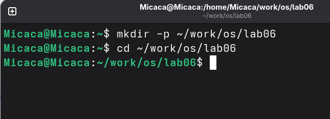
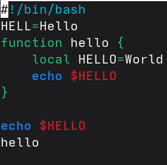
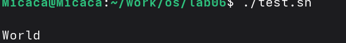
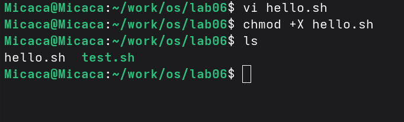
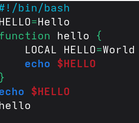
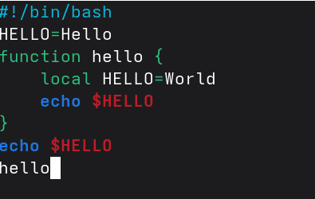
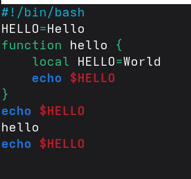
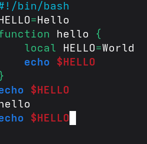

3 Выполнение лабораторной работы
3.1 Создание нового файла с использованием vi
Снчала я создала каталог с именем ~/work/os/lab06 и перешла в нем:

Рис. 1: Создание каталога
Вызвала vi и создала файл hello.sh одновременно. Перешла в режим вставки с помощью клавиши i и вводила текст:

Рис. 2: режим вставки
Используя клавиши esc я перешла в команднный режим, затем нажимала : для перехода в режим последней строки. Затем я записала и вышла из vi используя w, q и enter:

Рис. 3: Сохранение файла
С помощью chmod +х создаю исполняемый файл:

Рис. 4: Исполняеммый файл
3.2 Редактирование существующего файла
Вызвала vi на редактирование файла, установила курсор в конец слова HELL второй строки. Далее я перешла в режим вставки и заменила на HELLO. После этого я вернулась в командный режим:

Рис. 5: Перемешение курсора
Я перешла в режим вставки с помощью клавишы i, установила курсор на четвертую строку и сотрила слово LOCAL, перешла в режим вставки и вводила текст local. После этого я вернулась в командный режим:

Рис. 6: Заменение текста
Я перешла в режим вставки, установила курсор на последней строке файла и вставила после неё строку, содержащую текст echo $HELLO. Далее перешла в командный режим:

Рис. 7: вставка текста
Я удалила последнюю строку:

Рис. 8: Удаление строки
С помощью клавиши u, я отменила последнее действие. Я нажимала : для перехода в режим последней строки и вышла из vi:

Рис. 9: Отмена дествия